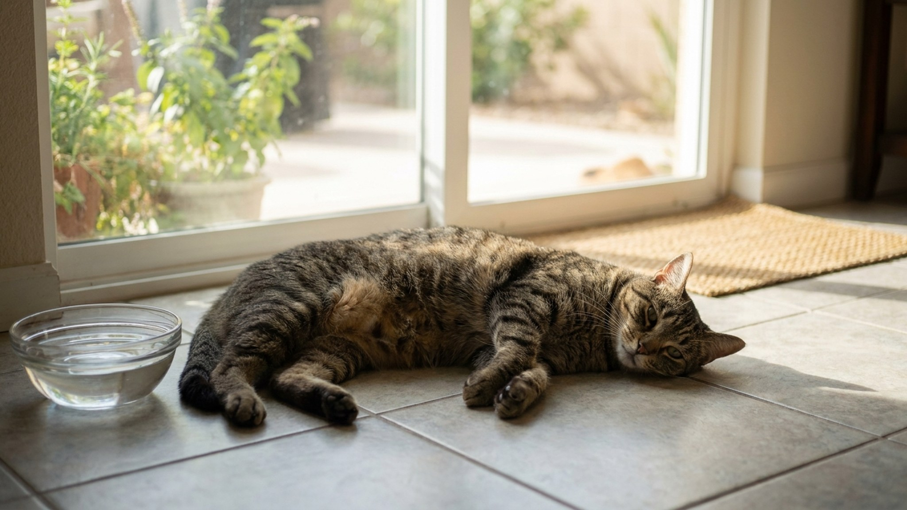

Жара и кошка: признаки перегрева, первая помощь и как охладить летом

29 мая 2026 · 9 минут чтения · Здоровье · Лето · Кошки
Многие хозяева уверены: кошки — существа из жарких стран, жару переносят легко. На деле это не так. Механизм терморегуляции у кошек принципиально отличается от человеческого, и при температуре выше 32–34°C без доступа к воде и прохладному месту кошка может получить тепловой удар за 15–20 минут. Лето в России становится всё жарче — в 2025 году Москва пережила 12 дней подряд с температурой выше 32°C. Разбираем, что происходит с телом кошки в жару, кто в группе риска и как действовать правильно.
🐾 Спросите AI-ветеринара прямо сейчас
AnimaLife — приложение, где AI-ветеринар отвечает на вопросы о кошке или собаке 24/7. Бесплатно, без записи и очередей.
Открыть в Telegram → Открыть в MAX →
Как кошка охлаждается — и почему жара для неё опаснее, чем кажется
Человек при перегреве потеет всем телом — испарение влаги с кожи эффективно отводит тепло даже при +35°C снаружи. У кошки потовые железы расположены только на подушечках лап. Их площадь ничтожна. Это практически не даёт охлаждающего эффекта.
Основные механизмы теплоотдачи у кошки:
- Вылизывание. Слюна испаряется с шерсти и чуть охлаждает кожу. В сухую жаркую погоду эффект минимален — влага испаряется быстрее, чем помогает.
- Учащённое дыхание. Небольшое учащение дыхания — нормальная реакция на жару. Но дыхание открытым ртом у кошки — уже серьёзный тревожный сигнал, в отличие от собак, для которых пантинг обычен.
- Поиск прохладных поверхностей. Кошка ложится на плитку, в ванну, в тень на полу. Это нормальное адаптивное поведение — теплопроводность керамики эффективно отводит тепло от тела.
- Снижение активности. Кошка инстинктивно экономит тепло, переходя в режим максимального покоя в жаркие часы — с 12 до 16 часов.
Нормальная температура тела кошки — 38,0–39,2°C. При 39,5–40°C — субфебрилитет, повод усилить внимание. При 40°C+ — гипертермия, срочно принимать меры. При 41°C+ — критическая зона: необратимые изменения в почках, мозге и свёртывающей системе крови начинаются уже через несколько минут.
Кто в группе риска: за этими кошками следите особо
Не все кошки одинаково уязвимы к жаре. Наибольшего внимания требуют:
- Брахицефалы — персы, экзоты, британцы и шотландцы с плоской мордой. Укороченные дыхательные пути делают теплообмен через дыхание неэффективным. Они перегреваются в 2–3 раза быстрее длинномордых пород. Дыхание открытым ртом у перса при температуре в квартире 28°C — уже повод действовать.
- Пожилые кошки (10+). Терморегуляция ухудшается с возрастом. У большинства есть скрытая или явная хроническая болезнь почек, сердца — органы, которые первыми страдают от перегрева.
- Котята до 4–6 месяцев. Система терморегуляции не дозрела. Особенно уязвимы котята до 4 недель — они не могут самостоятельно поддерживать температуру тела вообще.
- Кошки с лишним весом. Жировая ткань — теплоизолятор. Чем толще кошка, тем хуже она отдаёт тепло с поверхности тела.
- Кошки с хроническими болезнями — сердечная недостаточность, ХБП, сахарный диабет, гипертиреоз снижают адаптационный резерв организма.
- Длинношёрстные породы — мейн-куны, норвежские лесные, сибирские, ангоры. Шерсть работает и как защита от холода, и как теплоизолятор в жару. В квартире без кондиционера им значительно тяжелее.
Ранние признаки перегрева: когда ещё можно помочь дома
На этой стадии кошке можно помочь своими силами, без экстренной поездки в клинику. Важно не пропустить начало:
- Заметное учащение дыхания — кошка дышит явно быстрее обычного, заметно движение боков.
- Нарочитая вялость: кошка не реагирует на еду, игрушки, зов. Лежит не вставая.
- Горячие уши и подушечки лап на ощупь — сильнее обычного.
- Ярко-розовые, почти красные слизистые — дёсны, язык.
- Повышенное слюноотделение, влажная мордочка.
- Кошка активно ищет прохладные поверхности, плитку, тень, постоянно меняет место.
- Отказ от еды, но нормальная или повышенная жажда.
Отдельный сигнал: дыхание открытым ртом у кошки. У здоровой кошки это нонсенс — рот открывается только при стрессе, боли или тяжёлом перегреве. Это не «просто жарко» — это уже переход к серьёзной ситуации.
Критические симптомы: везти к врачу немедленно
При следующих признаках каждая минута имеет значение. Начинайте охлаждение по дороге — не ждите «пока станет лучше дома»:
- Одышка, хрипы, явное усилие при каждом вдохе.
- Обильное слюнотечение, пена изо рта или из носа.
- Рвота и диарея, особенно повторные.
- Потеря координации — кошка шатается, падает, не может встать.
- Судороги или мышечные подёргивания.
- Тёмно-красные, синюшные или мертвенно-бледные дёсны.
- Ступор, заторможенность, не реагирует на прикосновения.
- Потеря сознания.
Тепловой удар запускает каскад: отёк мозга, ДВС-синдром (нарушение свёртываемости крови), острую почечную недостаточность. Без интенсивной терапии в клинике кошка может погибнуть — даже если «очнулась» по дороге и кажется лучше. Привезите к врачу в любом случае.
AI-оценка не заменяет очный приём ветеринара. При критических симптомах — только клиника, без промедления.
Первая помощь при перегреве: пошагово
Чёткая последовательность, которую важно знать заранее:
- Перенесите в прохладное место. Комната с работающим кондиционером (но не прямо под поток), ванная с плиткой, тень с вентиляцией. Главное — убрать из источника тепла.
- Смочите водой комнатной температуры. Лапы, живот, шею, паховую область. Не ледяной водой — резкое сужение периферических сосудов ухудшит отведение тепла от внутренних органов и может вызвать шок. Вода должна быть прохладной, но не холодной — около 20–22°C.
- Обдувайте вентилятором. Испарение воды с шерсти активно отводит тепло. Это важный шаг, не пропускайте.
- Предложите воду комнатной температуры. Не заставляйте пить силой. Если кошка в сознании и хочет — пусть пьёт сама.
- Позвоните в ветклинику уже в процессе охлаждения. Расскажите симптомы. Врач скажет, везти немедленно или продолжать охлаждение дома.
- Измеряйте температуру каждые 5–10 минут. Цель — снизить до 39,0–39,5°C. Как достигли — прекратите активное охлаждение, чтобы не переохладить.
Что нельзя делать категорически: обкладывать льдом или снегом, лить ледяную воду из-под крана, заворачивать в мокрое полотенце (мокрое полотенце блокирует испарение и задерживает тепло), давать любые лекарства, жаропонижающие, аспирин — без назначения врача.
Как обустроить квартиру в жаркий сезон
Профилактика перегрева — это прежде всего правильно организованная среда. Несколько конкретных шагов:
- Доступ к прохладному полу. Керамическая плитка в ванной и кухне — естественный охлаждающий элемент. Не закрывайте эти комнаты в жаркие дни. Если всё перекрыто ковриками, уберите хотя бы часть.
- Несколько мисок с водой в разных точках квартиры. Кошки пьют охотнее, когда вода «случайно обнаруживается» в разных местах. Меняйте воду дважды в день — тёплая вода значительно менее привлекательна.
- Питьевой фонтанчик. Проточная вода привлекает кошек инстинктивно — в природе она безопаснее стоячей. Кошки с фонтанчиком пьют на 30–50% больше по объёму. Это критически важно для профилактики МКБ и ХБП.
- Охлаждающий коврик. Гелевые или заполненные водой — продаются в зоомагазинах от 500 руб. Большинство кошек осваивают их быстро, особенно если положить рядом с любимым местом.
- Жалюзи или шторы на окнах с солнечной стороны. Закрывайте в дневное время. Это снижает температуру в комнате на 5–8°C без кондиционера.
- Влажная еда в жару. Консервы и паучи содержат 70–80% воды — это дополнительная гидратация, особенно для кошек, которые плохо пьют самостоятельно.
Три опасных ловушки, о которых забывают
Застеклённый балкон. Парниковый эффект — температура внутри может быть на 15–20°C выше наружной. Если снаружи +30°C, на застеклённом балконе в солнечный день — легко +50°C. Кошки обожают балконы и солнце и сами оттуда не уйдут, даже когда перегреваются. Закройте доступ на застеклённый балкон в жаркие дни или обеспечьте постоянную тень, открытые форточки и воду.
Машина. При +25°C снаружи температура в закрытом автомобиле достигает +40°C за 10 минут и +50°C за 20 минут. Кошка в переноске в машине без кондиционера — высокий риск смертельного теплового удара за 15–20 минут. Никогда не оставляйте животное в припаркованном автомобиле летом, даже на «пять минут».
Кондиционер и сквозняки как другая крайность. Резкое переохлаждение и движение холодного воздуха — риск простуд, ринитов, бронхитов. Кондиционер не должен дуть непосредственно на кошку. Температура в комнате с кондиционером — не ниже 22–23°C. Перепад температур между комнатами не должен превышать 8–10°C.
Открытое окно без москитной сетки. Это не только риск падения — это риск при перегреве. Дезориентированная от жары кошка теряет координацию и может выпасть из окна, которое в обычный день не представляло бы опасности. Антикошачья или москитная сетка обязательна на всех открытых окнах.
🐾 Дневник здоровья питомца — в кармане
Вес, прививки, симптомы и напоминания в одном приложении. AnimaLife следит за здоровьем питомца вместо вас.
Завести дневник → Открыть в MAX →
Поездки и переезды летом: как минимизировать риск
Лето — это дачи, поездки к родственникам, переезды. Для кошки это двойной стресс: незнакомое место плюс жара.
- Переноска должна хорошо вентилироваться — не пластиковый «закрытый контейнер» без отверстий, а клетка с металлической дверцей или переноска с сетчатыми боковинами.
- В машине — кондиционер на 22–24°C, переноска в тени (не под прямыми лучами через стекло).
- На дачном участке: обязательно закрытое помещение с тенью и водой. Кошки, которых «отпускают на улицу» на даче, могут уйти и перегреться без возможности найти воду.
- В поезде или самолёте: уточняйте правила провоза животных и условия — некоторые вагоны плохо охлаждаются.
← Все статьи · Открыть AnimaLife в Telegram · RSS